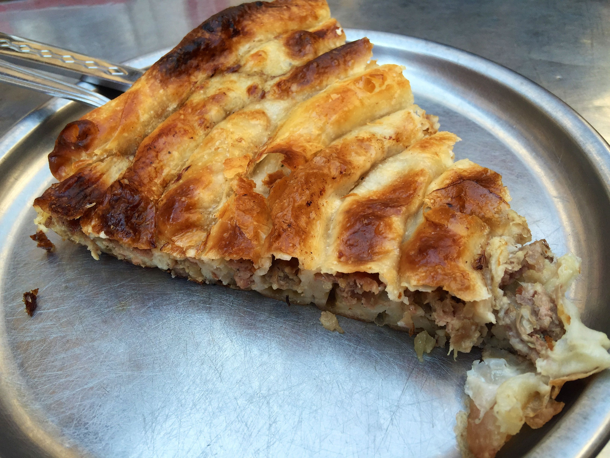
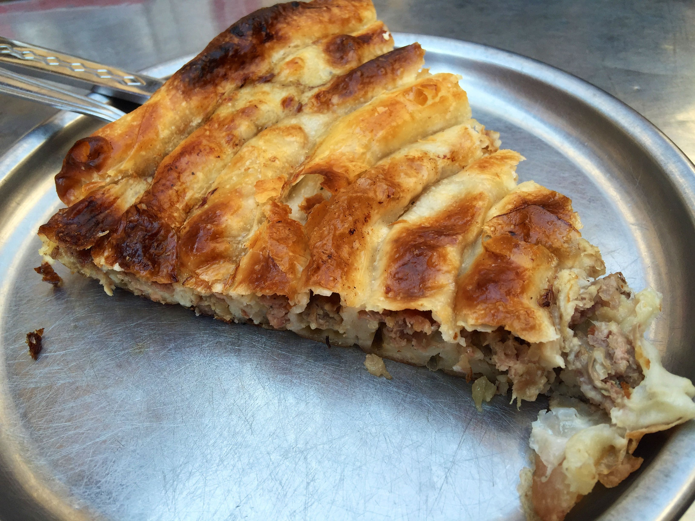

Burekotvornica
Ovde imate priliku da vidite neke od uslikanih primeraka koji su delo našeg burekotvorca. čika Mileta, koji je definitivno prijavljen i za koga sigurno plaćamo doprinose(ne morate da proveravate). Čika Mile se svakog dana trudi da do vaših nepca dostavi ukus najizvanrednijeg bureka koji ste ikad jeli ili bar najizvanredniji burek tog dana, ako nemate baš visoke standarde.


 
